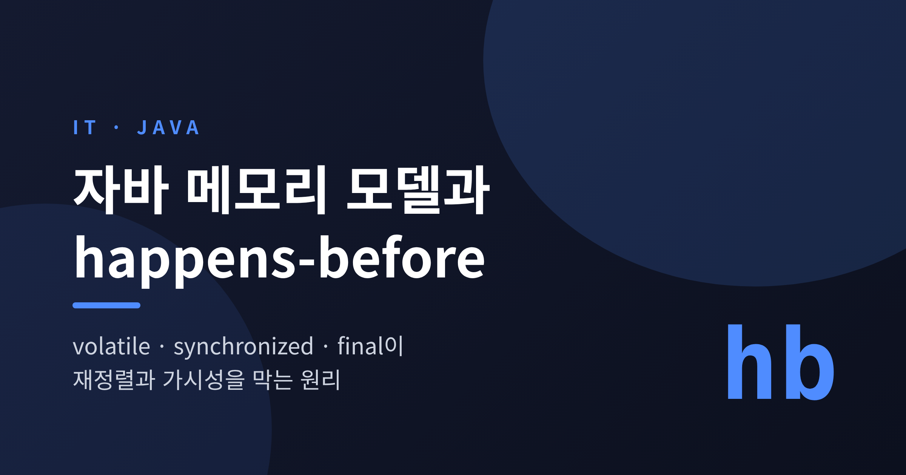
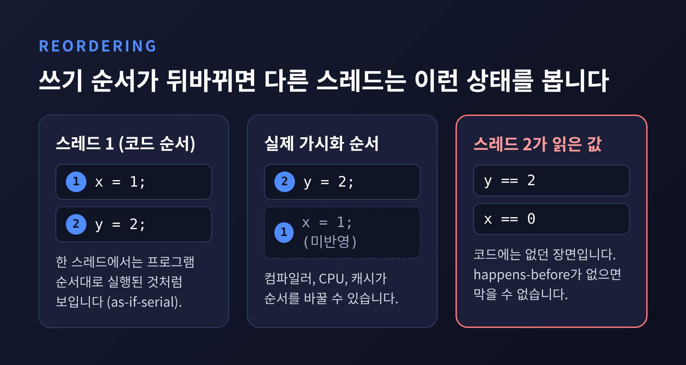
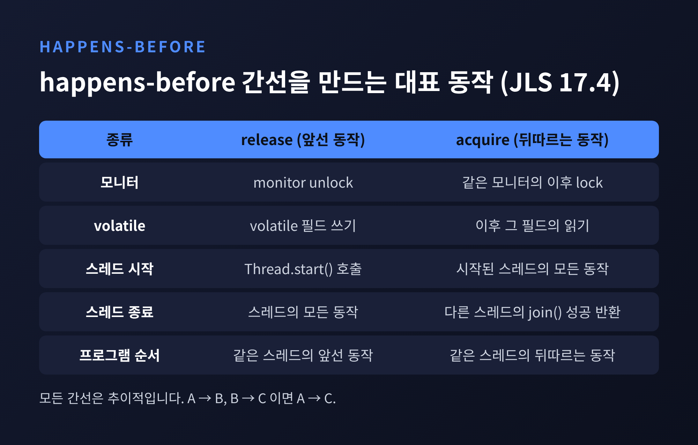
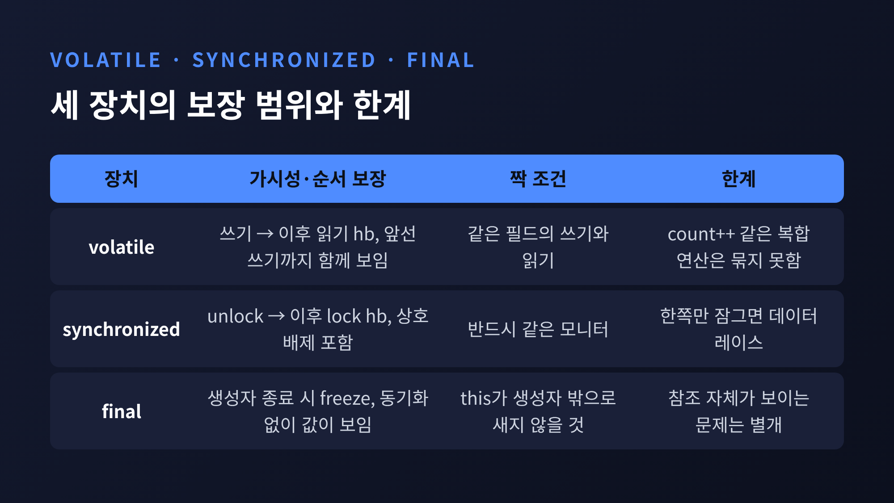
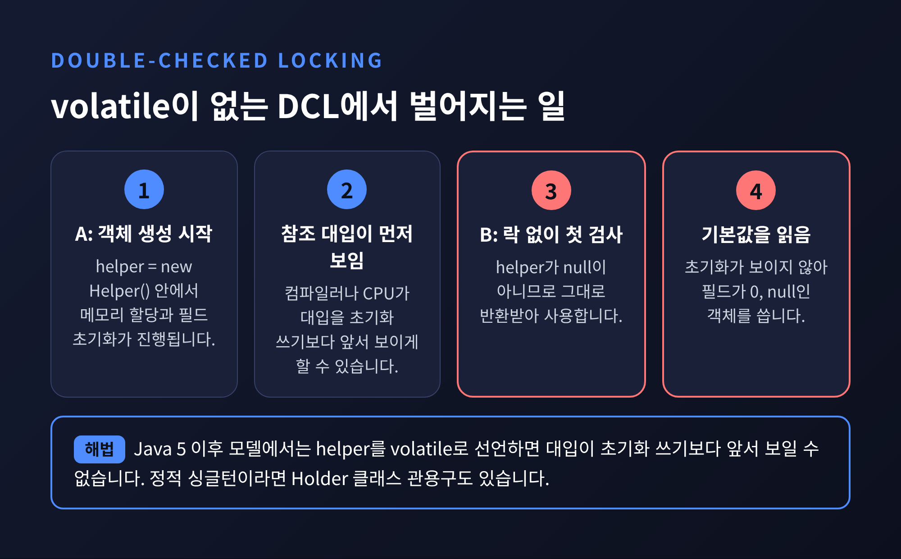
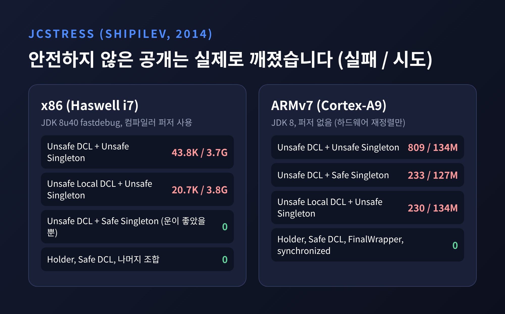
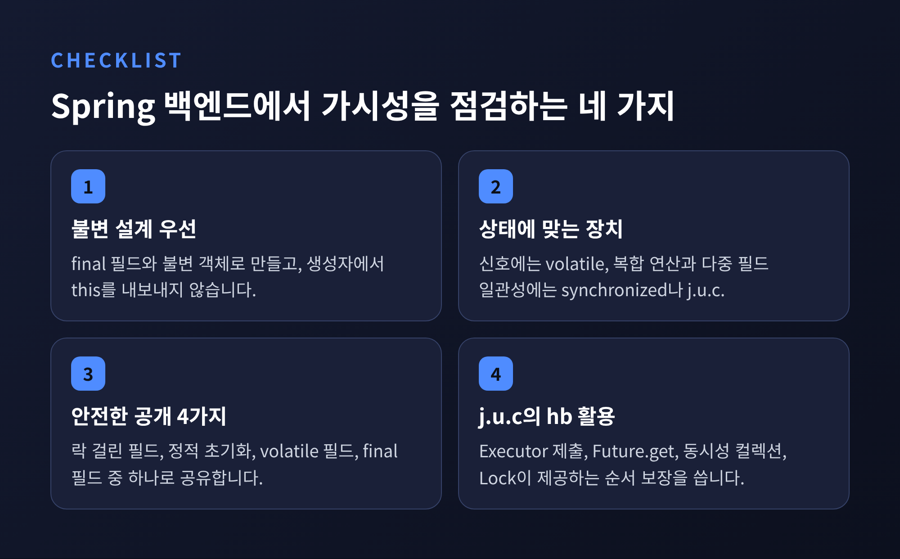

이번 글에서는 자바 메모리 모델(JMM)이 무엇을 약속하고, volatile·synchronized·final이 그 약속을 어떻게 지키는지 정리해 보겠습니다. 핵심은 한 줄입니다. 한 스레드의 쓰기가 다른 스레드의 읽기에 보이려면, 둘 사이에 happens-before 관계가 있어야 합니다. Spring 싱글턴 빈처럼 여러 요청 스레드가 같은 객체를 만지는 환경이라면 한 번쯤 짚고 넘어갈 내용입니다.
컴파일러, CPU, 캐시는 성능을 위해 연산의 순서를 바꿉니다. 한 스레드만 보면 문제가 없습니다. 자바는 한 스레드가 프로그램 순서대로 실행되는 것처럼 보이게 해 주기 때문입니다(as-if-serial). 다만 이 약속은 스레드가 둘 이상일 때 힘을 잃습니다. 서로 다른 스레드가 같은 데이터를 다르게 볼 수 있다는 점까지는 막아 주지 않습니다.
x, y가 모두 0인 상태에서 한 스레드가 x = 1; y = 2;를 실행한다고 가정해 보겠습니다. 쓰기 순서가 뒤바뀌면 다른 스레드는 y는 2인데 x는 0인 상태를 읽을 수 있습니다. 코드에는 없는 장면입니다.

모든 접근마다 순서를 강제하는 순차 일관성(sequentially consistent)을 지키면 이런 일은 없습니다. 하지만 비용이 너무 큽니다. 그래서 JMM은 타협을 택했습니다. 데이터 레이스가 없는 프로그램에 한해서만 순차 일관성처럼 보이도록 보장합니다. JLS 17장의 표현을 빌리면 데이터 레이스가 없으면 모든 실행이 순차 일관적으로 보입니다.
여기서 데이터 레이스의 정의가 중요합니다. 같은 변수에 대한 두 접근 중 하나 이상이 쓰기이고, 둘이 happens-before로 정렬되어 있지 않으면 데이터 레이스입니다. 결국 JMM을 이해한다는 것은 happens-before를 이해한다는 말과 거의 같습니다.
happens-before(hb)는 JLS 17.4.5가 정의한 순서 관계입니다. 규칙은 네 가지로 압축됩니다.
이 중 실전에서 쓰는 것은 두 번째와 네 번째입니다. synchronizes-with 간선을 만드는 동작은 JLS가 명시합니다. 간선의 출발점을 release, 도착점을 acquire라고 부릅니다.

표에 없는 평범한 필드 접근에는 간선이 없습니다. 그래서 static boolean ready; 같은 일반 필드를 한 스레드가 바꾸고 다른 스레드가 반복해서 읽는 코드는, 읽는 쪽이 새 값을 영영 보지 못해도 명세 위반이 아닙니다. 데이터 레이스이기 때문입니다.
한 가지 오해는 짚어 두겠습니다. hb가 있다고 해서 두 동작이 실제로 그 순서로 실행된다는 뜻은 아닙니다. JLS는 합법적인 실행과 결과가 같다면 재정렬해도 불법이 아니라고 밝힙니다. hb는 실행 순서가 아니라 "볼 수 있는 값"에 대한 약속입니다.
volatile 필드의 쓰기는 이후 그 필드를 읽는 모든 스레드의 읽기와 synchronizes-with 관계를 맺습니다. JSR-133 FAQ는 이를 두고 volatile 쓰기가 모니터 해제와 같은 메모리 효과를 갖는다고 설명합니다. 읽기는 모니터 획득과 같습니다.
class Worker {
int payload; // 일반 필드
volatile boolean ready; // 신호용 필드
void producer() {
payload = 42; // (1)
ready = true; // (2) volatile 쓰기 = release
}
void consumer() {
if (ready) { // (3) volatile 읽기 = acquire
use(payload); // (4) 42가 보장됨
}
}
}
(1)은 (2)보다, (3)은 (4)보다 프로그램 순서상 앞서고, (2)와 (3)이 synchronizes-with로 이어집니다. 추이성에 따라 (1)은 (4)보다 hb입니다. 일반 필드인 payload까지 함께 안전해지는 이유입니다.
Doug Lea의 쿠크북은 구현 쪽 사정을 보여 줍니다. 일반 store는 이후 volatile store를 넘어 재정렬될 수 없고, volatile load는 이후 어떤 메모리 접근도 넘어 재정렬될 수 없습니다. JVM은 이 규칙을 메모리 배리어로 지킵니다. 쿠크북에 따르면 volatile store 앞에는 StoreStore, 뒤에는 StoreLoad가 필요하고, StoreLoad는 대부분의 최신 멀티프로세서에서 가장 비싼 배리어입니다. x86에서는 나머지 배리어가 사실상 필요 없어서 volatile store 뒤의 StoreLoad만 신경 쓰면 됩니다. 다만 쿠크북 스스로 서문에서 역사적 가치만 있다고 밝힌 문서이므로, 프로세서별 세부는 개념을 이해하는 용도로만 보시길 권합니다.
volatile의 한계도 분명합니다. 보장하는 것은 개별 읽기와 쓰기의 가시성과 순서입니다. count++처럼 읽고 고쳐 쓰는 복합 연산을 하나로 묶어 주지는 않습니다. 이런 경우에는 synchronized나 AtomicInteger가 필요합니다. 또 하나, 64비트 long·double은 volatile이 아니면 32비트 두 번의 쓰기로 처리될 수 있어 반쪽짜리 값을 읽을 수 있다고 JLS 17.7이 밝힙니다. 공유되는 64비트 값에 volatile을 권하는 이유입니다.
synchronized를 상호 배제 도구로만 알고 계신 분이 많습니다. JSR-133 FAQ는 이렇게 적습니다. 동기화는 synchronized 블록 안팎에서 한 스레드가 쓴 값이, 같은 모니터에 동기화하는 다른 스레드에 예측 가능하게 보이도록 보장한다고요.
모니터 해제(unlock)는 같은 모니터에 대한 이후의 획득(lock)보다 hb입니다. 락을 풀기 전의 모든 쓰기가 락을 잡은 다음 스레드에게 보입니다. 여기서 "같은 모니터"라는 조건이 핵심입니다. 쓰는 쪽만 synchronized로 감싸고 읽는 쪽이 동기화하지 않으면 짝이 맞지 않아 데이터 레이스가 됩니다. Shipilev도 writer에만 synchronized를 붙이는 것은 도움이 되지 않으며, reader도 짝이 되는 락이나 volatile이 필요하다고 지적합니다.
// 아무 효과가 없는 동기화: 아무도 이 객체를 잠글 수 없다
synchronized (new Object()) { /* ... */ }
JSR-133 FAQ에 따르면 이 코드는 사실상 no-op이어서 컴파일러가 통째로 지울 수 있습니다. 다른 스레드가 잠글 수 없는 객체에서는 happens-before 관계가 생기지 않기 때문입니다.
비용에 대한 평가는 소스마다 다릅니다. Shipilev의 벤치마크에서는 경합이 큰 연속 접근에서 synchronized를 쓴 지연 초기화가 가장 느렸습니다. 반면 Google Error Prone 문서는 접근자를 synchronized로 만드는 비용이 현대 JVM에서 대체로 무시할 만하다고 봅니다. 두 말은 충돌하지 않습니다. 경합이 극단적인 핫패스인지, 일반적인 서비스 코드인지에 따라 다른 이야기를 하고 있습니다.
final 필드에는 별도 규칙이 있습니다. 생성자가 final 필드를 쓰면, 생성자가 끝나는 시점(정상이든 예외든)에 freeze 동작이 일어납니다. 생성자가 끝난 뒤에야 그 객체 참조를 본 스레드는 final 필드의 올바른 값을 보장받습니다. 동기화가 필요 없습니다.
JLS가 든 예가 이 차이를 잘 보여 줍니다.
class FinalFieldExample {
final int x;
int y;
static FinalFieldExample f;
FinalFieldExample() { x = 3; y = 4; }
static void writer() { f = new FinalFieldExample(); }
static void reader() {
if (f != null) {
int i = f.x; // 3이 보장됨
int j = f.y; // 0을 볼 수도 있음
}
}
}
단서가 두 가지 있습니다. 첫째, 생성자가 끝나기 전에 this를 다른 스레드가 볼 수 있는 곳에 내보내면 보장이 깨집니다. 리스너 등록이나 static 필드 대입을 생성자 안에서 하지 말라는 규칙이 여기서 나옵니다. 둘째, final은 반쯤 만들어진 객체를 막아 줄 뿐 객체 참조 자체가 보이는 문제는 해결하지 못합니다. Shipilev의 실험에서 final 필드로 보호한 싱글턴도 안전하지 않게 공개되면 ARM에서 null을 읽는 경우가 있었습니다.

세 장치가 함께 등장하는 대표 사례가 지연 초기화입니다. 아래 코드는 Bacon, Bloch, Lea, Manson, Pugh 등 13명이 서명한 선언문에서 "깨졌다"고 지목한 형태입니다.
class Holder {
private Helper helper; // volatile이 아님
Helper get() {
if (helper == null) {
synchronized (this) {
if (helper == null) helper = new Helper();
}
}
return helper;
}
}
첫 번째 검사는 락 없이 이뤄집니다. 컴파일러나 프로세서가 참조 대입을 생성자 쓰기보다 먼저 보이게 할 수 있어서, 다른 스레드가 null이 아닌 helper를 보고도 초기화되지 않은 필드를 읽을 수 있습니다. 대입을 안쪽 synchronized 블록으로 옮겨도 소용이 없습니다. 모니터 해제는 앞선 동작이 먼저 끝난다는 것만 보장하므로 뒤의 대입이 해제 앞으로 당겨질 수 있기 때문입니다.

해법은 Java 5 이후 JMM에서 helper를 volatile로 선언하는 것입니다. 선언문에 따르면 JDK 4 이하에서는 여전히 깨집니다. JSR-133 개정이 2004년 Java 5(Tiger)에서 이뤄졌다는 점과 맞물립니다.
정적 싱글턴이라면 Holder 클래스 관용구가 더 단순합니다. 클래스 초기화는 한 번만 일어나고, 그 필드에 접근하는 모든 스레드가 초기화 쓰기를 보기 때문입니다.
volatile DCL을 쓸지에 대해서는 의견이 갈립니다. JSR-133 FAQ(2004)는 고쳐지긴 하지만 volatile 비용이 동기화에 가깝게 올라가니 Holder를 권합니다. Error Prone 문서는 x86에서 volatile이 거의 공짜이므로 volatile 사용을 권합니다. Shipilev의 측정은 그 중간쯤입니다. x86에서 안전한 DCL은 첫 접근에서 volatile 쓰기 때문에 약 4ns가 더 들 뿐이었고, ARMv7의 연속 접근에서는 깨진 DCL이 3~6ns 빨랐지만 저자는 이를 정확성의 합리적인 대가라고 평했습니다.
안전하지 않은 공개가 실제로 깨지는지는 Shipilev가 jcstress로 측정했습니다. 실패 횟수와 시도 횟수는 다음과 같습니다.

x86에서는 안전하지 않은 팩토리와 안전하지 않은 싱글턴이 만났을 때만 실패가 나왔고, 나머지 조합은 0건이었습니다. 그 0건을 믿으면 안 된다는 것이 저자의 결론입니다. ARMv7에서는 싱글턴 자체는 안전하게 만들었어도 팩토리가 안전하지 않으면 233/127M의 실패가 나왔고, Holder·안전한 DCL·FinalWrapper·synchronized는 모든 조합에서 0건이었습니다. 실험 환경이 x86은 컴파일러 퍼저를 켠 JDK 8u40, ARMv7은 퍼저 없는 JDK 8이라는 점은 감안하셔야 합니다.
"내 노트북에서 문제없이 돌았다"는 증거가 못 된다는 이야기입니다. x86은 순서를 비교적 엄격히 지켜 주는 플랫폼이고, 배포 환경이 ARM 기반 인스턴스로 옮겨 가는 순간 숨어 있던 레이스가 드러날 수 있습니다. 다만 이 실험은 2014년 자료이므로 최신 JVM에서의 수치가 같다고 단정할 수는 없습니다.
Spring 공식 문서에 따르면 싱글턴이 기본 스코프이고, 하나의 인스턴스가 캐시에 저장되어 모든 요청에 같은 객체가 반환됩니다. 문서는 상태를 가진 빈에는 프로토타입 스코프를, 상태 없는 빈에는 싱글턴 스코프를 쓰라고 합니다. 싱글턴 빈의 가변 필드를 누가 동기화해 주는지는 제가 열람한 범위에서 명시되어 있지 않았습니다. 컨테이너가 빈 참조를 안전하게 내어 주는 일과, 빈 내부의 가변 필드를 스레드 안전하게 만드는 일은 별개로 보는 편이 안전합니다.
Spring 자신도 같은 원리로 짜여 있습니다. main 브랜치의 DefaultSingletonBeanRegistry에서 싱글턴 캐시 singletonObjects는 final ConcurrentHashMap이고, 생성용 락 singletonLock은 ReentrantLock이며, 클래스에서 유일한 volatile은 singletonsCurrentlyInDestruction 플래그 하나였습니다. 컬렉션은 동시성 컬렉션에 맡기고, 단순한 상태 신호에는 volatile을 쓰는 구성입니다. 버전에 따라 달라질 수 있는 구현 세부이니 참고만 하시길 바랍니다.
java.util.concurrent가 제공하는 hb도 실무에서 자주 만납니다. Javadoc은 이런 관계를 보장합니다.
Future.get() 이후 동작보다 hb입니다.Lock.unlock은 Lock.lock, CountDownLatch.countDown은 await보다 앞선 동작을 보이게 합니다.그래서 @Async 메서드나 ExecutorService로 일을 넘길 때 요청 객체를 제출 전에 다 채워 두면, 별도의 volatile 없이도 작업 스레드가 그 값을 봅니다. 반대로 제출 뒤에 같은 객체를 바꾸는 코드는 hb가 보장하는 범위 밖이므로 조심해야 합니다.

정리하면 선택 기준은 이렇습니다. 가능하면 불변 객체와 final 필드로 설계합니다. 가변 상태가 불가피하면 한 번 쓰고 여러 번 읽는 신호에는 volatile을, 복합 연산과 여러 필드의 일관성에는 synchronized나 j.u.c 도구를 씁니다. 객체를 공유하는 방법은 Shipilev가 꼽은 안전한 공개 네 가지, 즉 락이 걸린 필드, 정적 초기화, volatile 필드, final 필드 중에서 고르시면 됩니다.
마지막으로 한 가지만 덧붙이겠습니다. JMM의 개정 작업인 JEP 188은 2016년 6월 마지막 갱신 이후 Draft 상태이며 목표 릴리스도 정해지지 않았습니다. 이후 진행은 제가 확인하지 못했습니다. 그만큼 JSR-133 기반의 현행 규칙이 당분간 우리가 기대야 할 기준선이라는 뜻입니다.
결국 남는 것은 하나입니다. "동기화되지 않은 공유는 보이지 않을 수 있다."
동시성 버그는 재현되지 않을 때가 가장 무섭습니다. 오늘 코드에서 공유되는 가변 필드를 하나만 찾아, 그 쓰기와 읽기 사이에 어떤 happens-before가 놓여 있는지 말로 설명해 보시길 권합니다. 설명이 막히는 곳이 있다면, 그곳이 바로 고쳐야 할 자리일 것입니다.